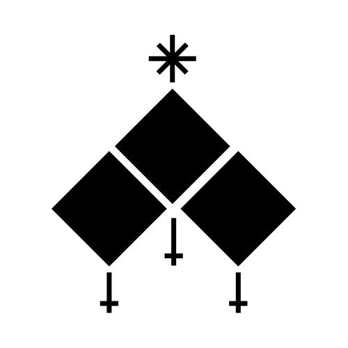
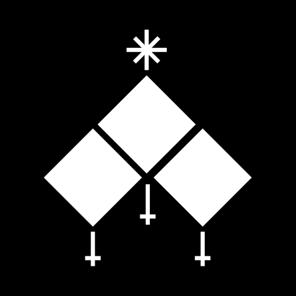
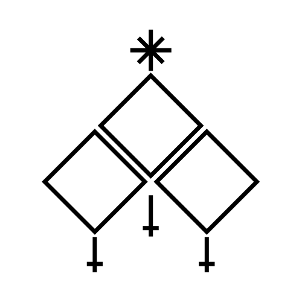
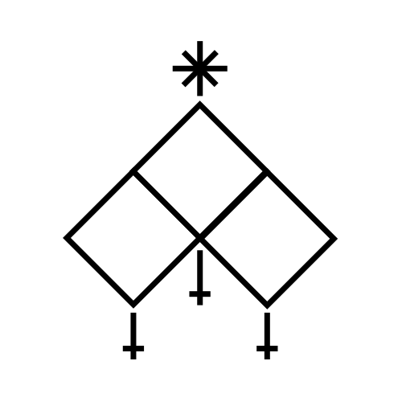

Sodas — a mathbook with a straw ornament
The editors already speak a clear language: square corners, 1px rules, white icons on colour squares, cream italic descriptions, a dotted canvas. The library pages should speak the same language, add the structure of a school textbook (numbered sections, chapters, exercises, figures, contents, margin notes) and carry one warm thread — the straw of the sodas.
Principles
1.1 Structure from the textbook
- Sections are numbered: §1, §2. Industries are chapters (I, II…), examples are exercises (I.2).
- Every example has a figure with a caption, drawn in editor style.
- A project opens with a title, an abstract and Contents.
- Facts about a thing go in the margin, not in badges around the title.
1.2 Ornament from the sodas
- One decorative colour: straw. Only for numerals, ornaments, the active marker.
- Diamond ◇ is the unit: difficulty, dividers, list markers, hover hints.
- The band (diamonds on a thread) appears at most once per page.
- Never use the ornament on controls a user must read fast.
1.3 Same vocabulary as the editors
- No border radius, no shadows; 1px
--rulelines; hover = ink border. - Kind squares use
KIND_COLORSverbatim. - Descriptions: cream fill, serif italic — like description rows.
- Canvas: dot grid (flow) or squared paper (hero, empty states).
1.4 Fix what hurts today
- Pages are a 700px column in a wide window → use 1200px.
- 10–11px text everywhere → 12px minimum, titles 17–22px serif.
- Three action cells per card → one primary, card is the link.
- Yellow banners → footnotes with one action.
- All-black identical project icons → colour per project.
The mark
app/public
001 solid · favicon, ≤ 24px
002 inverse · top bar square
003 outline · hero, empty states
004 lattice · watermark, loadingSuggestion: the lattice (004) is the most “mathbook” of the four — it is a diagram, a graph of nodes. Use it big; use the solid (001/002) small, where thin lines would vanish. The proposal ships SVG traces in proposal/assets/ so the mark can change colour by theme.
Colour
--paper--canvas #f8f9fa--cream #fdf8ec--rule #dee2e6--ink #17191c--ink-3 #868e96--straw #b8892b--link #1971c2Type
44 / 34 / 22 / 17
14–18
12 / 13 / 14
10.5, +0.08em
11.5–13.5
loanOriginationDecision(application: Application) → DecisionSTIX Two was drawn for scientific and mathematical publishing; it pairs with the formula-like code and gives the “school mathbook” feel without looking old. Fallbacks: Iowan Old Style, Georgia.
Components
- 1Workbooks2
- 1.1Joint mortgage application3 in · 4 ƒ
- 2Services1

Ornament
Mapping to src/ui/sheet
| Primitive today | Change |
|---|---|
SheetPageHeader | Serif title 34px, italic lead, straw kicker label; drop the 48px black square on library pages (keep it in the Shell) |
SheetPanel | Whole panel is the link; optional figure + caption; description row in cream italic; at most one primary action |
SheetSection | Numbered: §n in straw italic, serif 22px title, hairline to the right, count + link |
SheetChip | Outline only (currentColor border), no fills; tones ok / straw / warn / ink |
SheetTokens | Unchanged |
new SheetContents | Contents list with numbers and dotted leaders |
new Difficulty | Three diamonds, filled by level; replaces level colours on icon squares |
new Ornament | divider | band; theme-aware straw |